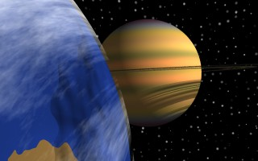
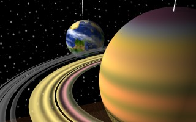
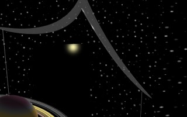
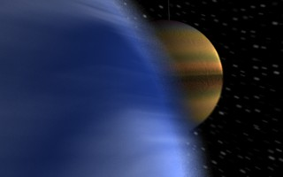
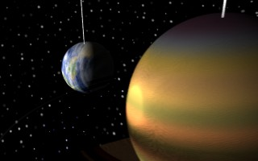
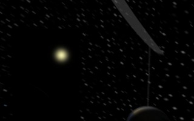
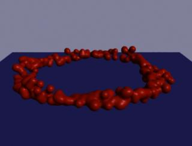

Particles & RiBlobby
Houdini is a 3D animation and effects program with good hooks to RenderMan. It is one of the most powerful particle systems, I have seen. Houdini comes with a renderer, Mantra, and with the release of Houdini-2.5, mantra is really zippy. With Houdini it is possible to make material networks, that can create RenderMan shaders on the fly.
For the moment, I am taking a purist approach, where I already have my own shaders and want Houdini to use them. NOTE: By doing this, I am sacrificing some of Houdini's power. As there are plenty of neat things that can be done, easier and perhaps quicker, by working with Mantra. But as this is a RenderMan site... So far the only non-SideFX web site that I am aware of is: Houdini Tips. -- Actually, it seems as though this page is going to go away. Another place to try, is od[force].
Also, keep in mind, that I have just started to learn Houdini. If you notice, I am doing something wrong or you have some of your own examples, let me know!
Exporting color & alpha
In the Materials-Editor, change the "Difuse color" to you want Cs to be. Set the "Transmit color" for your opacity, Os. Then on the geomtry-object's SHADING PAGE, set the material to match the one you just set. Say the "Diffuse color" was set to RGB (.7 0 0) and "Transmit color" was (.5 .5 .5), the RIB for that object would give:
Color [0.7 0 0]
Opacity [.5 .5 .5]
Which would be read into the shader as: Cs and Os respectfully.
Houdini and BMRT
Yes, it is true, it is fairly easy to get Houdini to use BMRT for rendering. The Houdini Tips link has a pretty good description of what to do. Soon, I will be posting a perl "RMANDS" script, so the Houdini dialog script box will work with BMRT shaders.
Examples
Space Crib
The following is my first Houdini animation. It is a work in progress. There are two versions, the first is a BMRT version. Next I will follow it up with a prman version. There are still some work left do to: No sound, doorway is pretty boring, also maybe add another planet to keep the smaller one company.
These animations use the following nonstandard shaders:
LGParquetPlank,
TLSaturn,
TLRing,
TLTerranNWhite,
KMTerranbump,
KMPlanetclouds,
wood2(included in BMRT distribution),
RCGlow,
uberlight, and
LCStarfield(An antialiased starfield shader).
These shaders can also be found in: scShaders.tgz (a gzipped tar file)
First are some BMRT stills:
sc.0017.rib.gz
sc.0069.rib.gz
sc.0149.rib.gz
scbm.mpg (150 frame 320x200 mpeg animation --1.1M)
scbm.tar.gz -- houdini HIP file.
prman stills:
sc.0017.rib.gz
sc.0079.rib.gz
sc.0136.rib.gz
Particles & RiBlobbys,

Particles are Houdini's "bread and butter". This compressed hip is a slightly modified version of the particleRing SOP demo. If you change the bl_particle_ring OP to emit particles as spheres; emit RIB; and run the part2blob.pl script; it will create a set of ellipsiod RiBlobbys.
Instead if you changed the particle-sop to emit "lines", then the converor will emit segment RiBlobbys.
The RMR is Copyright © 1995-2005 Tal L. Lancaster all rights reserved
Last modified: Wed Jan 17 22:47:15 PST 2001